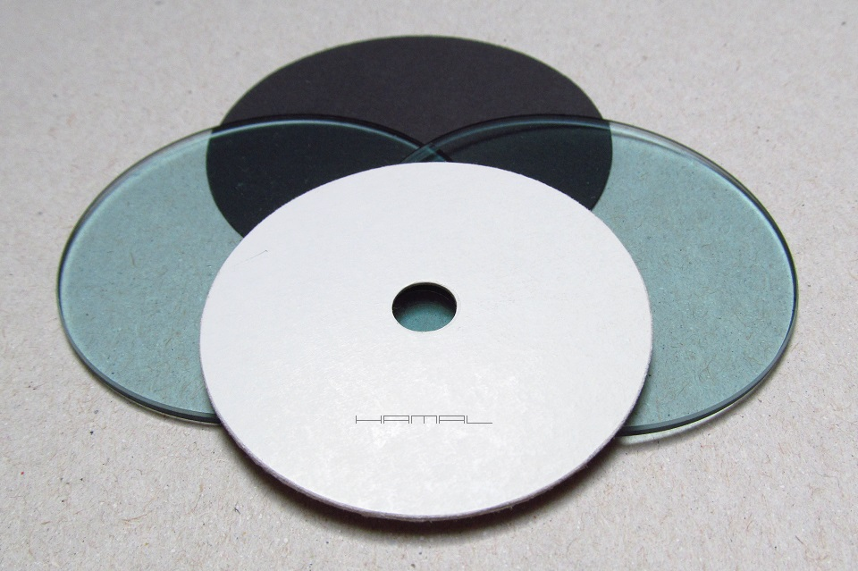
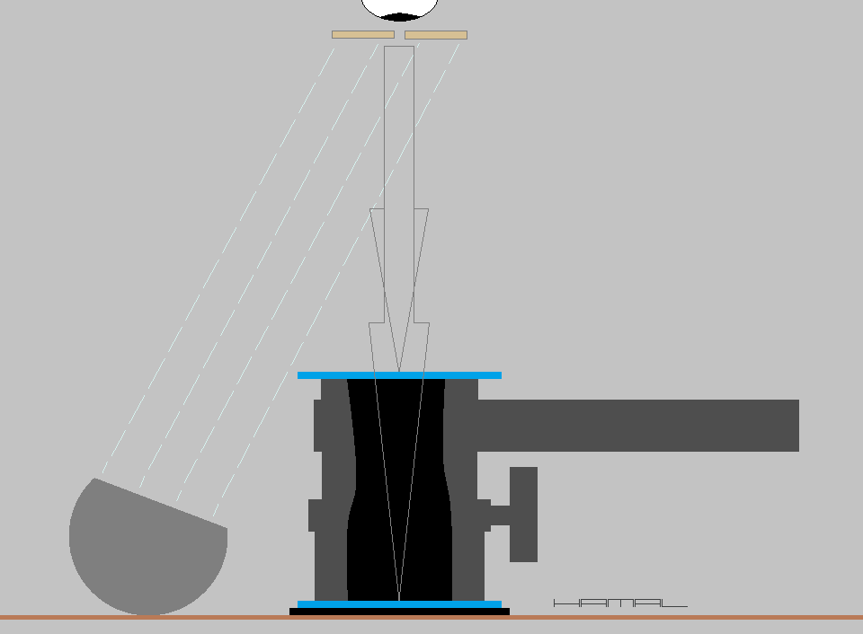
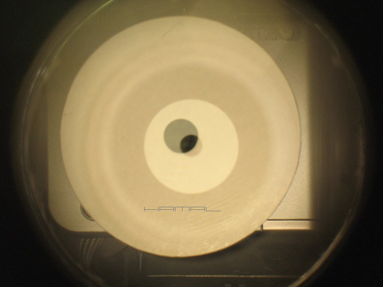
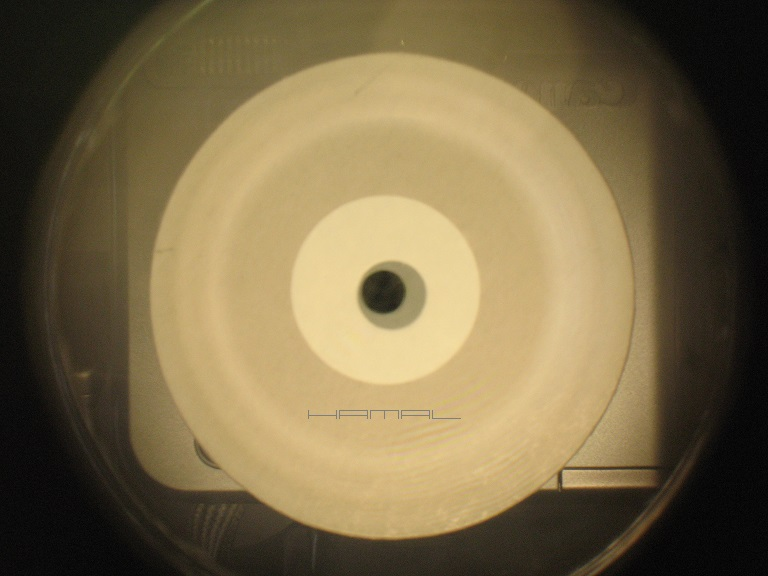
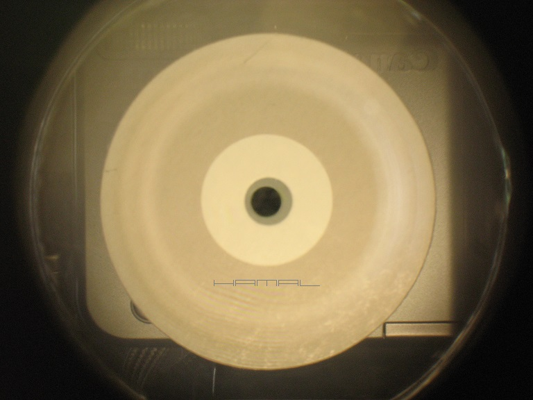
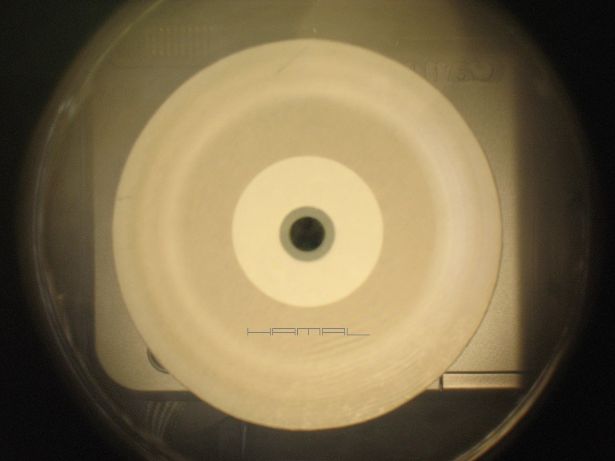

.
Opis metody mojego pomysłu na optyczne badanie
równoległości płaszczyzn zestawów astrofotograficznych
|
Dnia 11-05-2020r w TYM temacie pierwszy raz opisałem moją nową metodę badania równoległości płaszczyzny matrycy kamerki względem noska kamerki. Tutaj jednak opiszę inne zastosowanie niniejszej metody, ale... uczciwie muszę przyznać, że choć ja wymyśliłem tę technikę, nigdy bym nie wpadł na to, aby zastosować ją do badania równoległości płaszczyzn zestawów astrofotograficznych, a to z tej prostej przyczyny, iż astrofotografia, jaką się zajmuję (Lucky Imaging) posługuje się mało rozbudowanymi zestawami optycznymi. To dopiero Kolega rambo w tym poście dopatrzył się możliwości rozszerzenia zastosowania tej techniki i szczerze pragnę Mu tutaj to oddać :) WSTĘP . Tuleje, pierścienie, OAG, koło filtrowe, gdy to wszystko poskręcamy ze sobą, pierwsza płaszczyzna zestawu powinna być idealnie równoległa z ostatnią, lecz czy tak jest, tego nie wiemy. Montujemy taką piramidkę do wyciągu okularowego, odpalamy sesję i dokładamy Tilt Adapter Plate Adjuster, aby wyrównać to, co jest krzywe. A przecież, mając sposobność badania już na etapie skręcania zestawu, jak się części układają, możemy ponawiać próby dociągnięcia gwintów do czasu, aż wszystko ułoży się w miarę należycie, nadto, gdy nic nie uzyskamy na gwintach, oszczędzając czas pod gwiazdami, Tilt Adapter Plate Adjuster też możemy podregulować za pomocą tej metody. SPRZĘT . Opisana tu technika jest bardzo prosta do wykonania i nie wymaga skomplikowanych narzędzi. Na zestaw kolimacyjny składają się: - Dwie szybki - mogą być jakieś filtry 2" np IRcut, lub szybki z okularów spawalniczych, te nieprzyciemniane. Muszą to być szybki w miarę równe optycznie. Krzywe szybki z zabawek, plexi itp się nie nadają. - Biały kartonik z otworkiem - kartonik z wyciętym 7mm-10mm otworkiem. Kartonik może być dowolnego kształtu, otworek może być dowolnego kształtu, ponieważ nam chodzi jedynie o odbicia od szkiełek. Główną rolę gra otworek, który nie może być zbyt mały, gdyż ciężko będzie dokonywać oceny wzajemnych przesunięć odbić, nie powinien być też niepotrzebnie duży, bo to utrudni badanie. Optymalny, jak już pisałem, jest 7mm-10mm. - Czarny kartonik - kartonik ma pełnić jedynie rolę tła, aby odbicia w szybkach były lepiej widoczne. - Lampka - jej zadaniem będzie intensywne oświetlanie kartonika od dołu. Może to być zwykła lampka biurkowa 230v. Zestaw kolimacyjny .  OPIS BADANIA . Aby dokonać opisywanego tu badania, ustawiamy piramidkę :) Pierwej kładziemy czarny kartonik, na niego pierwszą szybkę, na szybkę otworem optycznym (jednym końcem) kładziemy badany zestaw, na drugi koniec zestawu kładziemy drugą szybkę. Następnie do ręki bierzemy biały kartonik z otworkiem i trzymając go ok. 20cm nad górną szybką zestawu, oświetlamy go od dołu lampką, jak na obrazku poniżej. Przez otworek w białym kartoniku, z góry, obserwujemy odbicie otworka w pierwszej szybce oraz (przez tor optyczny zestawu) odbicie otworka w drugiej szybce. Interesuje nas ich wzajemne położenie względem siebie. Ważne przy tym jest, aby nasze oko było ustawione na środku otworka obserwacyjnego, unikamy patrzenia bokami, gdyż to fałszuje wyniki, a im większy otworek, tym bardziej. Gdy dolna szybka, leżąca pod zestawem, jest idealnie równoległa względem naszej szybki górnej, oba odbicia będą się na siebie symetrycznie nakładały, lecz gdy szybki są względem siebie odchylone z winy nierówności złożenia zestawu, odbicia będą względem siebie przesunięte (patrz zdjęcia na końcu opisu). Mniejszy krążek to odbicie od szybki dolnej, większy krążek, to odbicie od szybki górnej. Aby zrozumieć, jak to działa, patrząc przez kolimator i widząc odbicie w szybce dolnej i szybce górnej, leżącą swobodnie górną szybkę przechylaj lekko na różne strony, zobaczysz wtedy, jak odbity w niej otworek kartonika wędruje na boki, więc analogicznie jest w drugą stronę, gdy dokonujemy badania i odbicia nie są symetryczne względem siebie, to oznacza, że szybki w wyniku nierówności zestawu, nie leżą równolegle.  Poniżej widzimy brak równoległości skrajnych płaszczyzn zestawu astrofotograficznego. Przesunięte względem siebie odbicia otworu jednoznacznie wskazują, że szybki nie są względem siebie równoległe. Mniejszy krążek to odbicie od dolnej szybki, większy krążek to odbicie od górnej szybki.     Poniżej widzimy idealną równoległość skrajnych płaszczyzn zestawu astrofotograficznego. Symetryczne względem siebie odbicia otworu jednoznacznie wskazują, że szybki są względem siebie równoległe. Mniejszy krążek to odbicie od dolnej szybki, większy krążek to odbicie od górnej szybki.  
|